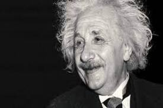
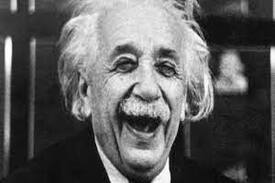
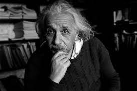
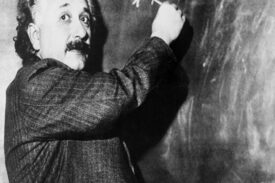

My Published Papers:
The Principle of Relativity
Annus Mirabilis Papers
Theory of the Brownian Movement
Geometry and Experience

My Hobbies:
"Einstein developed an appreciation for music at an early age. In his late journals he wrote: 'If I were not a physicist, I would probably be a musician. I often think in music. I live my daydreams in music. I see my life in terms of music ... I get most joy in life out of music'" (Wikipedia).
My Image Gallery:




My Blog:
Post 1: Thoughts on Lenin
"In Lenin I honor a man, who in total sacrifice of his own person has committed his entire energy to realizing social justice. I do not find his methods advisable. One thing is certain, however: men like him are the guardians and renewers of mankind's conscience" (Wikipedia).